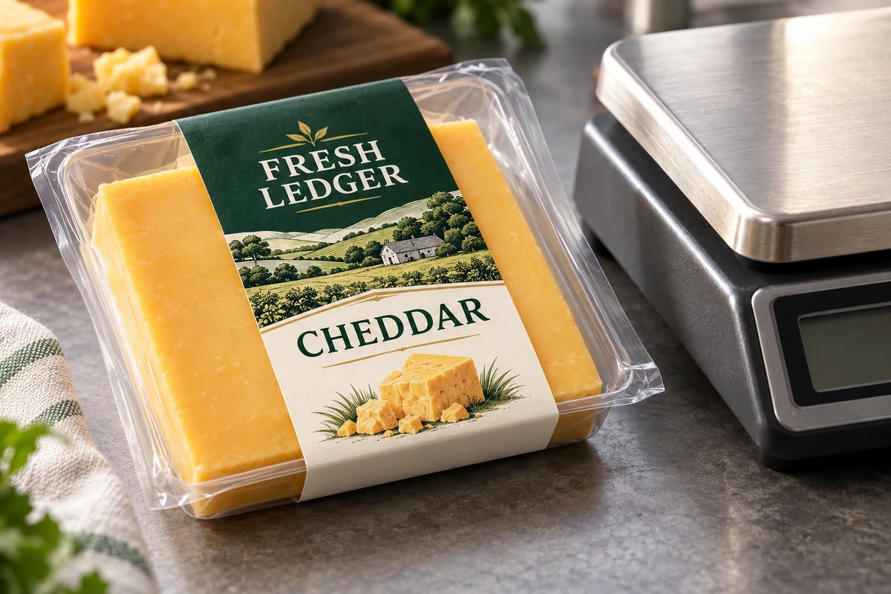
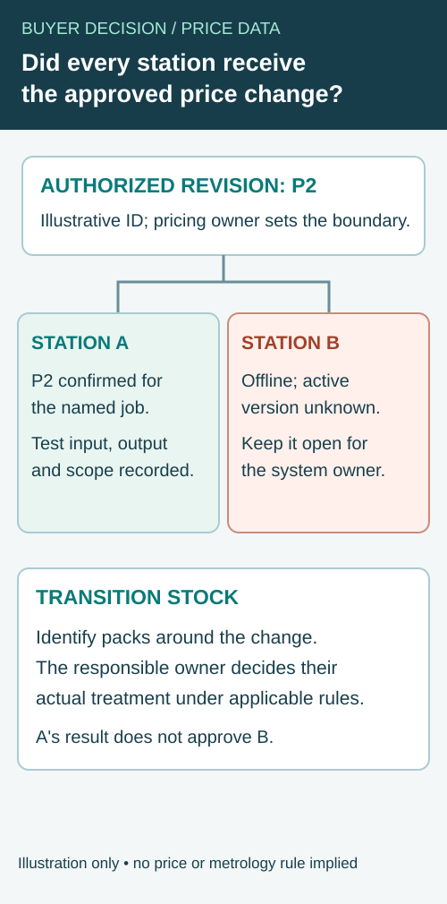

The printed price looks reasonable and the barcode scans. At checkout, the transaction still shows another product or amount because the scale record, encoded data and point-of-sale configuration do not describe the same authorized sale.
Reconcile the data path before releasing the label workflow. Identify the source of product identity, weight, unit price and total, then check how the intended checkout interprets the printed symbol. A successful scan confirms neither the price calculation nor the business meaning of the decoded data.

Identify the authoritative records
Ask which system owns each input. Product description may come from a master-data record, weight from an approved weighing process and price from a controlled pricing system. Record who can update those values and how the scale or label printer receives them.
The actual market, retailer and equipment determine applicable price, weighing and identification rules. Obtain those requirements from their responsible owners. This article does not prescribe legal-metrology settings, rounding rules, tax treatment or a universal variable-weight barcode format.
The date-and-lot handoff guide controls the origin of generated fields. Price reconciliation adds a transaction relationship: the label, encoded data and checkout need to refer to the same approved inputs and interpretation.
Draw the complete data path
Start at the approved product and pricing record. Follow the information through the weighing/labeling system, printed human-readable fields, encoded symbol and checkout result. Mark each interface where a value can be translated, shortened, calculated or selected manually.
Ask whether the symbol carries an identifier, a value or another defined structure under the applicable implementation. Do not infer that structure from a label photograph. A similar-looking code from another retailer or market may use different business rules.
GS1's retail point-of-sale implementation guideline discusses variable-measure data and how retail systems interpret it. Select the actual specification with the retailer or system owner rather than improvise a code from a generic example. Where more than one symbol is used, keep their business meaning and the human-readable information consistent with the authorized transaction.
Use a transaction reconciliation sheet
| Stage | Record and check |
|---|---|
| Authorized product | Item identity, description and applicable market/retailer record |
| Approved price | Unit basis, effective version and responsible pricing owner |
| Weighing event | Authorized equipment output and relevant transaction reference |
| Calculation | Approved system rule and expected result supplied by its owner |
| Printed text | Product, quantity and price fields match the authorized output |
| Encoded content | Decoded meaning matches the applicable implementation |
| Checkout | Intended POS resolves the correct product and transaction result |
| Exception/reprint | Authorized correction and treatment of earlier physical labels |
The sheet is an editorial integration aid. It does not certify the scale, approve a price or replace the system validation required by the business and applicable rules.
Build test transactions with the responsible owners
Use a controlled set of valid inputs and expected outputs supplied or approved by the relevant system and pricing teams. Include meaningful changes in product, unit basis and price version. The test should exercise the actual interfaces rather than only the visual field widths.
Keep the expected result independent of the output being checked. Copying the printed total into the expected-total column would make the reconciliation circular. Ask the authorized owner how the expected result is established under the applicable calculation rule.
Record the configuration versions. A test performed before a price-table update may not represent the data active on the packing day. Likewise, a checkout result from a training environment should be identified as such rather than reported as a live retailer acceptance.
Check data meaning and print quality separately
Decode the symbol and compare its meaning with the authorized record. Then assess the physical symbol under the relevant method. A correctly encoded label can be printed poorly, and a well-printed symbol can contain the wrong business data.
The barcode verification guide explains the distinction between a scan and an agreed quality assessment. Keep the print configuration and sample identity with the evidence so the data and physical-output decisions remain connected.
Review the human-readable fields as well. If the checkout and printed price disagree, the responsible commercial and market owners need a defined response. Do not let operators choose whichever amount appears more plausible or overwrite a field simply to clear the queue.
Control updates and reprints
Agree how a new price version reaches every relevant scale or printing station and when it becomes effective. Ask how cached or disconnected equipment is identified. The process needs a way to distinguish a current record from one that has not received the update.
For a hypothetical cheese operation, a price update may reach one station before another. The investigation should compare the active records and transaction path, not assume that label material caused the discrepancy because the complaint arrived with a printed label.
Reprints need an authorized source transaction and a defined treatment of the earlier label. Keep corrections distinguishable from a new weighing event. A reprint button alone does not establish which physical item the new label belongs to.
Release a price change across several labeling stations
A central price list can be updated while one packing scale still uses an earlier version. The first correct label from station A does not establish what station B will print. When a price change is authorized, compare the active price and product record at each station that may produce labels for the affected run.


The responsible pricing and system owners determine the effective time, approved price, weighing rules and treatment of goods produced around the change. This is an operational handoff worksheet; it does not set a legal price, tax treatment, metrology rule or universal transition period.
| Station record | What the operation should identify | Exception requiring an owner |
|---|---|---|
| Station and job | Physical station, product/SKU and intended packing run | An unlisted backup or disconnected station |
| Approved change | Authorized price version, effective boundary and pricing owner | A draft or earlier price used as the authority |
| Active station state | Version actually loaded or confirmed at that station | A cached, unknown or unmatched version |
| Sample transaction | Authorized test input, expected result and identified output | Expected result copied from the output being checked |
| Physical label | Printed human-readable fields and relevant decoded data | Correct appearance but incorrect business meaning |
| Checkout/system path | Relevant approved receiving or POS configuration and test scope | A training result presented as live acceptance |
| Status | Who confirmed the station and what remains held | An unchecked station treated as released with the others |
Keep station coverage explicit
Consider an illustrative operation with stations A and B. The price owner approves revision P2 for a particular product and effective point. A shows P2; B is offline and its active revision is unknown. A's successful test supports only the checked A configuration and transaction. It does not clear B. The system owner must decide how B receives and confirms P2 before that station is used for the affected work.
Use controlled representative inputs and expected results supplied or approved by the responsible owners. A correct printed price does not automatically establish that the encoded data and checkout interpret it as intended. Conversely, a correct system record does not demonstrate that a particular physical label was printed and applied correctly. The team should define each check and any needed symbol-quality verification for the actual workflow.
Resolve the transition stock separately
Identify any packs made under the previous configuration around the authorized change boundary. Their treatment depends on actual product, market, retailer and business rules; this article cannot decide whether they may be sold, corrected or held. Keep physical stock identity and the relevant station or time record with the responsible owner rather than silently overwrite a price history.
An urgent packing schedule can make it tempting to use the station that appears ready. Record which stations are confirmed and which remain open, then route the decision through the operation's established controls. A restart at one station is not a range-level approval. If a later update changes a product mapping or system configuration, review whether the earlier test still represents the new combination.
For a label or preprinted-shell inquiry, provide the station models, output method, required field areas, relevant retailer/system specification and a redacted example of the data handoff. The date and lot guide addresses a different field-source handoff; the barcode verification guide distinguishes data meaning from physical symbol quality. The label supplier should not be assumed to own the retailer's pricing system or certify the weighing equipment.
Give failures a clear route
Specify the response to a missing product, rejected code, unavailable pricing record or inconsistent result. The system and operations owners should decide whether the transaction is held, corrected or otherwise handled. Record the actual rule rather than let each operator improvise.
The general packaging-code guide provides context for choosing the scanning job. Here the release condition is more specific: the authorized data must remain coherent through the intended sale workflow.
Keep the label supplier's scope explicit
A converter can discuss media, preprinted areas and the output interface it supports. It should not be assumed to own the retailer's price logic or certify the business's weighing process. Assign those questions before buying the printed shell or final label stock.
Send a variable-weight output brief with label dimensions, output equipment, authoritative field definitions and the relevant retailer/system specification. Use redacted test records where appropriate and mark unresolved price-data questions. The form opens an email draft; review it and attach the controlled requirements through email or the listed WhatsApp route.